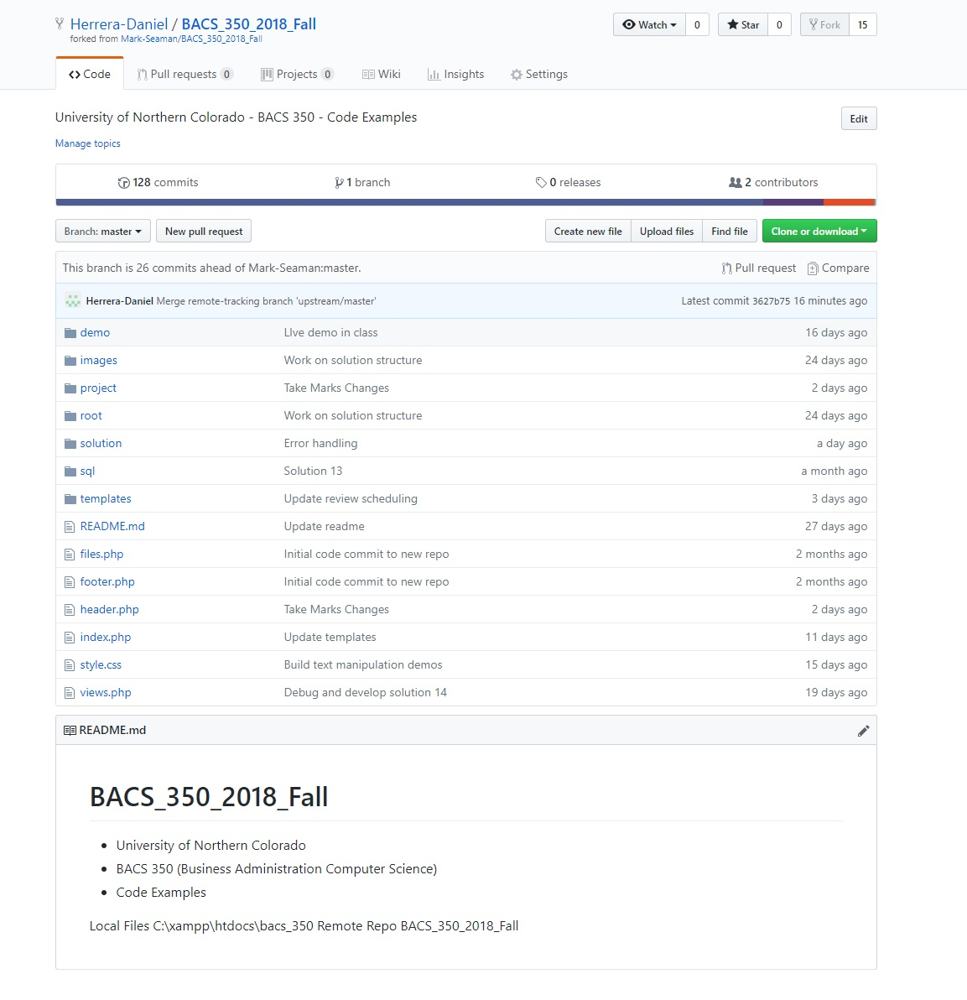
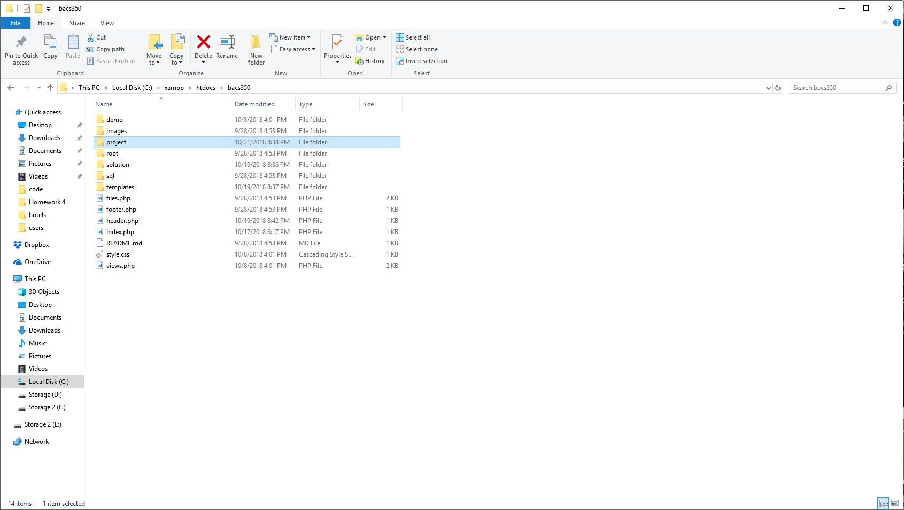
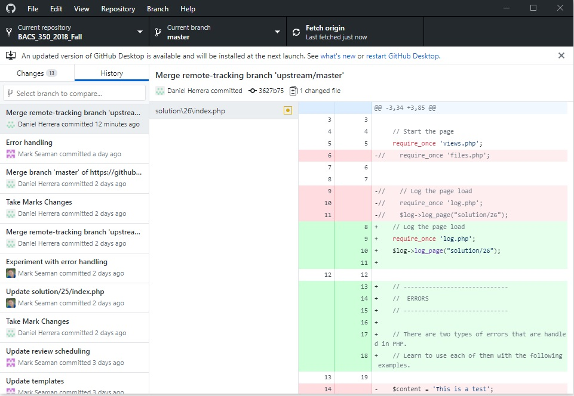
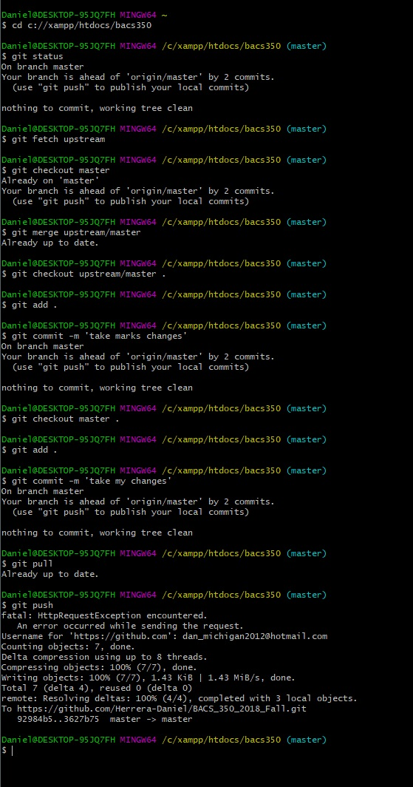

A screenshot showing that my repository was forked form yours.

A screenshot showing that my local repository works.

A screenshot showing that Github desktop is installed on my computer.

A screenshot showing that I can execute git bash commands.
A screenshot showing Github history, becuase I had already pushed and pulled, there was nothing to commit. In the command line you can see that both commands worked.